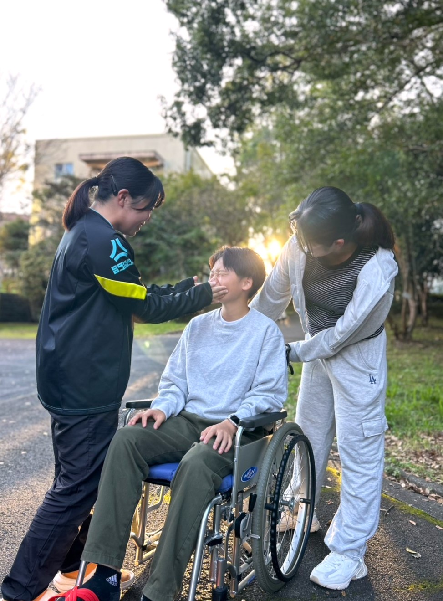

高齢化社会に欠かせない存在 介護福祉士を養成します
介護福祉士は、自分の力で日常生活を送ることが困難な高齢者や障害のある方の身体状況や気持ちに合わせて介護を行ったり、介護に関する指導やアドバイスを利用者及びその家族に行うことができる介護職として働くための唯一の国家資格です。
日本では高齢化が進行しており、2054年まで75歳以上の人口が継続的に増加すると予測されています。
このため、介護福祉士の需要は今後も増加し続けると考えられています。AIをはじめとする技術の進歩によって一部の業務が自動化されても、人間の温かみや共感を必要とする部分は代替が難しいため、介護福祉士の役割は今後も重要です。
本学では、介護福祉士の国家試験に合格するためのサポートをしています。国家試験に合格した多くの卒業生が県内・県外の介護の現場で活躍しています。
①高齢者関係 介護老人福祉施設（特別養護老人ホーム）・介護老人保健施設・有料老人ホーム・グループホーム等
②障害者関係：障害者支援施設（身体障害・知的障害・精神障害）等
③医療関係：病院・クリニック等
④児童関係：児童養護施設・障害児施設等
⑤在宅関係：デイサービス・デイケア・ホームヘルプサービス等

※介護福祉士養成課程の受講科目、内容の詳細については、履修要項をご確認ください。
履修要項（大学情報）